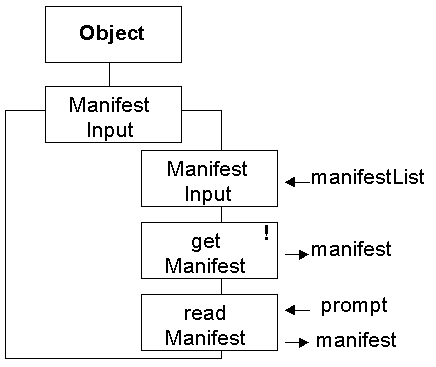

The input routines from Chapter 9 of the text book will allow integer and floating point values to be obtained from the user via the keyboard.
This part of waypoint 4 will supply comparable routines for the input of manifest values from user via the keyboard. This will be accomplished by supplying a class, called ManifestInput, instances of which can be used to input one of the String values from a list which is supplied to the ManifestInput constructor.
The ManifestInput class diagram is as follows.

The ManifestInput constructor requires a list of the String manifest values to be supplied to it.
The getManifest() method will attempt to input a manifest string from the keyboard. If the contents, ignoring leading and trailing spaces, of the next line obtained from the keyboard is one of the items on the list supplied to the constructor then the manifest value returned from the action will be that String's location in the list. If the contents of the next line is not one of the items on the list then a java.io.IOException will be thrown, and must be caught by the client.
The readManifest() method will engage the user in a dialogue using the prompt supplied as an invitation to enter a manifest value. If the user does not enter an item from the list they will be reminded of the values in the list and asked to try again. Eventually they must enter a value from the list and the manifest value returned from the action will be that String 's location in the list. This action does not throw any exceptions.